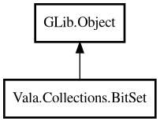

BitSet
Object Hierarchy:

Description:
public class BitSet : Object
A fixed-size or dynamically growing set of bits.
BitSet supports individual bit manipulation and bitwise operations (AND, OR, XOR). Inspired by Java's BitSet.
Bits are indexed starting from 0. The BitSet automatically grows to accommodate any bit index set.
Example:
var bits = new BitSet (64);
bits.set (0);
bits.set (3);
bits.set (7);
assert (bits.get (3));
assert (!bits.get (4));
assert (bits.cardinality () == 3);
Content:
Creation methods:
Methods:
- public bool @get (int index)
Returns the value of the bit at the specified index.
- public void @set (int index)
Sets the bit at the specified index to 1.
- public void and (BitSet other)
Performs a bitwise AND with another BitSet, modifying this BitSet in
place. Bits beyond the other's length are cleared.
- public int cardinality ()
Returns the number of bits that are set to 1.
- public void clearAll ()
Sets all bits to 0.
- public void clearBit (int index)
Sets the bit at the specified index to 0.
- public void flip (int index)
Flips the bit at the specified index (0 becomes 1, 1 becomes 0).
- public bool isEmpty ()
Returns whether all bits are 0.
- public int length ()
Returns the index of the highest set bit plus one. Returns 0 if no
bits are set.
- public void or (BitSet other)
Performs a bitwise OR with another BitSet, modifying this BitSet in
place.
- public string toString ()
Returns a string representation of the BitSet.
- public void xor (BitSet other)
Performs a bitwise XOR with another BitSet, modifying this BitSet in
place.
Inherited Members:
All known members inherited from class GLib.Object
- @get
- @new
- @ref
- @set
- add_toggle_ref
- add_weak_pointer
- bind_property
- connect
- constructed
- disconnect
- dispose
- dup_data
- dup_qdata
- force_floating
- freeze_notify
- get_class
- get_data
- get_property
- get_qdata
- get_type
- getv
- interface_find_property
- interface_install_property
- interface_list_properties
- is_floating
- new_valist
- new_with_properties
- newv
- notify
- notify_property
- ref_count
- ref_sink
- remove_toggle_ref
- remove_weak_pointer
- replace_data
- replace_qdata
- set_data
- set_data_full
- set_property
- set_qdata
- set_qdata_full
- set_valist
- setv
- steal_data
- steal_qdata
- thaw_notify
- unref
- watch_closure
- weak_ref
- weak_unref